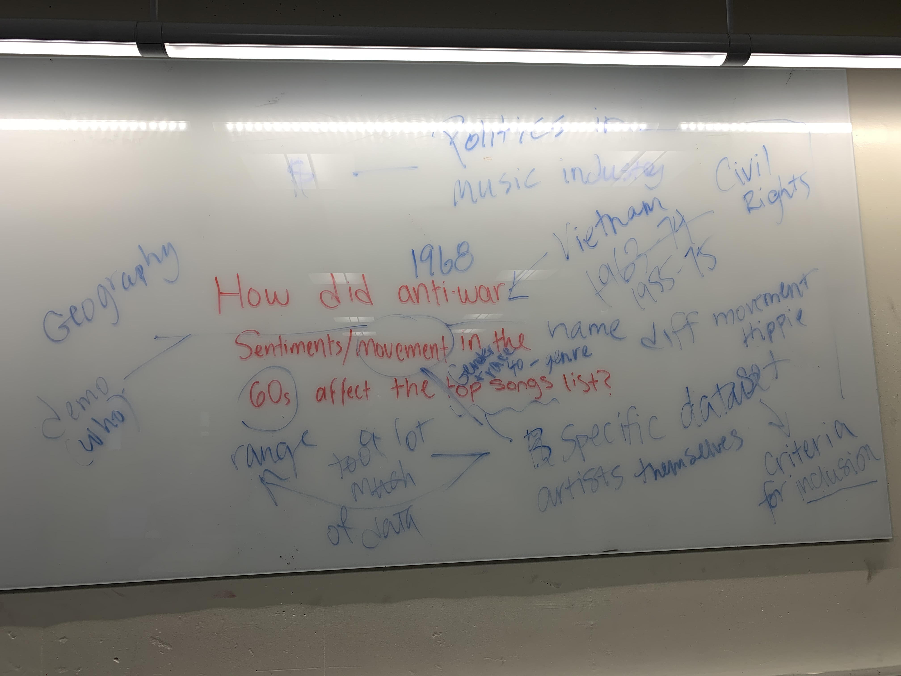

Introduction
The reasoning for the decisions and processes we used for this project were greatly influenced by a number of the reading we were assigned for our class (Introduction to Digital Humanities). Before we get into the full technical descriptions of this project we would first like to acknowledge that it took us quite a while to get a proper footing on this project. There were various discussions and a lot of questioning about the content we wanted to use and create and whether or not those would be useful or meaningful for the demonstration, or rather the interpretation of our data set.Forming our Argument
In the beginning stages of our project, we decided to focus on the influence that music had on events in history, like the civil rights movement, which was an effort that began in the late 1940s and ended in the late 1960s by Black Americans to end racial discrimination and obtain equal rights. We then thought it might be interesting to focus on the influence of music on anti-war sentiments throughout the duration of the Vietnam War in 1955-1975.
We think that the article A Storytelling Machine: from Propp to Software Studies written by Warren Sack can tie into our thought process here because the main idea within that reading argued that the formal structures inform how we describe and make sense of the world; and for that reason, we wanted to try to create a narrative with the data set in a way where we can use historical events that most people are already familiar with to create a new way of looking at it, while also trying to make it visually appealing, but we will touch on that a little later.
Eventually, we did come to a consensus on the argument we wanted to make and unfold. We decided to argue that even though Motown Records was not explicitly political in their music, the fact that the record was made up of Black artists and were successful Black artists was a political statement in and of itself. Through this lens, we wanted to use what we knew about the sound, the artists, and Motown’s audience through our readings and create a narrative on the hidden influence that the Motown record label had. We did not find it necessary to focus solely on Motown's effect on the civil rights movement or the Vietnam war, instead, we wanted to use those events to strengthen our argument and to give it more meaning.
With that said we decided to use those historical events to narrow down the data set we had. Which meant instead using the dates from 1960-2010, we chose to focus on 1960-1975. Which was a big help when playing around with different data visualization programs.
The article written by Michelle Castwell, Seeing Yourself in History: Community Archives and the Fight Against Symbolic Annihilation , gave us the inspiration to tell the story from a perspective of the people directly affiliated with the success that was Motown Records. Similar to the way that the article broke down the importance of data from marginalized groups, or groups who were otherwise not seen as important to society.
Deciding on the Visualizations
The only thing we knew we wanted without a shadow of a doubt was to use a timeline to show and strengthen the meaning of our data. We thought it could almost be compared to the article about wedding pictures and creating a visual representation using colors and certain times of day. For ours, the points of reference for our data set are the historical events that are subsequently happening as the songs and artists are releasing music and simultaneously making their mark on the charts (or not) it is all connected in one way or another. This is when we took to ArcGIS, a geographic information system for working with maps and geographic information, to create a story map (timeline) that incorporates various media forms, like videos, images, and maps to strengthen the narrative we are trying to show.Within the timelines we added a map that shows the move from Detroit, Michigan to Los Angeles, California. This decision can be tied to the Maps Are Territorieswebsite.
The Presentation of our Data Set
With the basic HTML and CSS skills that we had, we wanted to make sure that we created something simple yet also visually appealing. We wanted something that did not distract from the content within the page but also kept the information flowing and as interesting as possible. The primary reason for this decision is due to the blog we read through in class by Mike Loukides called It’s Time to Rebuild the Web. That website was a real motivation to keep additional media and images relevant and interactive for readers to enhance the experience of learning as opposed to taking it away or creating a distraction.We wanted to create something that looked like an actual informational website and not just an obvious school project. We saw what worked and what did not.